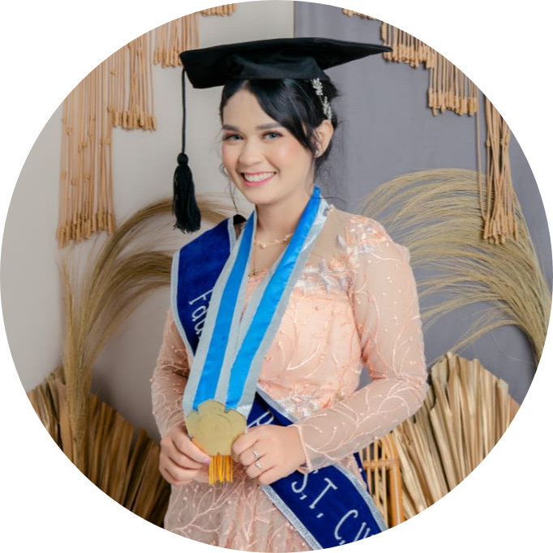

|  |
Fauzana Raolda Putri
Enviromental Engineering
My name is Fauzana Raolda Putri, I was born March 20, 1997
I from Pekanbaru. I am second from 3 of siblings. I am fresh Graduate
from Institut Science & Technology AKPRIND Yogyakarta with Majority is
Enviromental Engineering. I have some certification of my majority like a
water sampling (C.Ws) and AMDAL (Analisis Dampak Lingkungan).
I able use english both oral and write. good at communciation and
able work individual or group. good responsibility and willing learn somethig
new. but sometimes my mood is out of control, I have some illness at my
stomach.
|